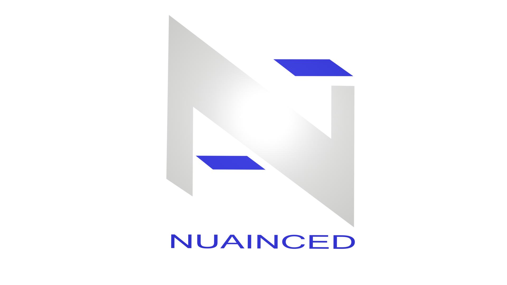

LOGO:


Projektuję logo, które się wyróżniają — nie giną w tłumie. Każdy znak, który tworzę, opiera się na wyczuciu stylu, starannej typografii i naturalnym instynkcie do kompozycji. Ten instynkt wyrobiłem sobie przez lata fascynacji graffiti — praca z literą jako formą artystyczną nauczyła mnie rozumieć kształt, rytm i symetrię w sposób, który bezpośrednio przekłada się na projektowanie logo. Pracuję na pełnym zestawie narzędzi — tworzę precyzyjne identyfikacje wektorowe w Adobe Illustrator, dopracowuję je w Photoshopie, a następnie wychodzę poza płaski ekran dzięki Blenderowi, gdzie logo staje się obiektem przestrzennym. W 3D nie zatrzymuję się na statycznym renderze: animuję i nadaję znakowi życie. To, co wyróżnia moją pracę, to ostatni krok — potrafię przekształcić logo 3D w interaktywny filtr Augmented Reality na Instagram i inne platformy social media. Wyobraź sobie markę, która istnieje w przestrzeni użytkownika, reaguje na ruch i przyciąga uwagę w sposób, którego nikt się nie spodziewa. To zupełnie nowy sposób, w jaki marka może zaistnieć w świecie. Pociągają mnie rozwiązania nieoczywiste. Śledzę najnowsze trendy i przyszłość technologii. Jeśli istnieje ciekawszy sposób na zrobienie czegoś — właśnie w tym kierunku chcę iść.
I design logos that stand out — they don't disappear into the crowd. Every mark I create is built on a strong sense of style, careful typography, and a natural instinct for composition. That instinct was shaped by years of fascination with graffiti — working with letterforms as an art form taught me to understand shape, rhythm, and symmetry in a way that translates directly into logo design. I work across a full set of tools — crafting precise vector identities in Adobe Illustrator, refining them in Photoshop, and then stepping beyond the flat screen with Blender, where a logo becomes a three-dimensional object. In 3D, I don't stop at a static render: I animate and bring the mark to life. What sets my work apart is the final step — I can transform a 3D logo into an interactive Augmented Reality filter for Instagram and other social media platforms. Imagine a brand that exists in the user's own space, reacts to movement, and draws attention in a way no one expects. It's a completely new way for a brand to exist in the world. I'm drawn to solutions that aren't obvious. I follow the latest trends and the future of technology. If there's a more interesting way to do something — that's exactly the direction I want to go.
